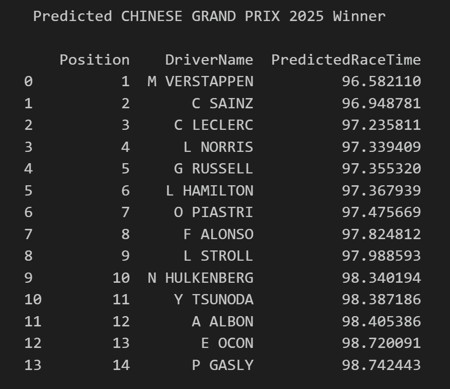
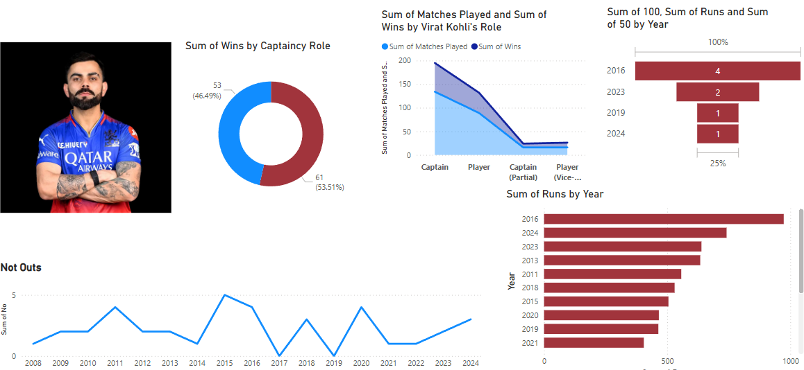
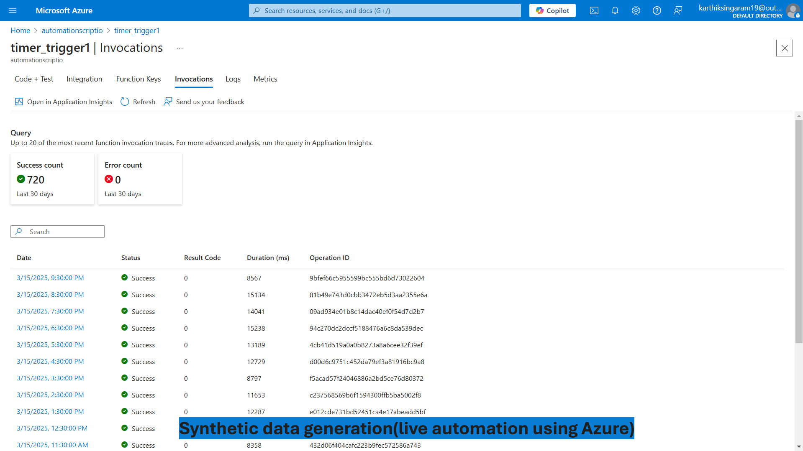
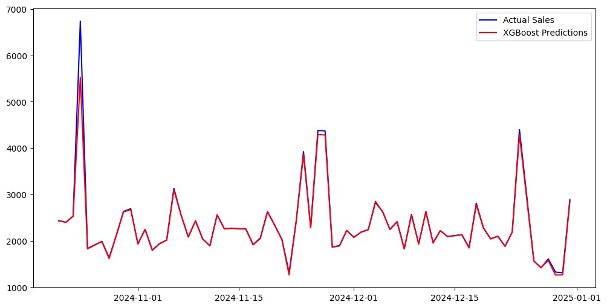
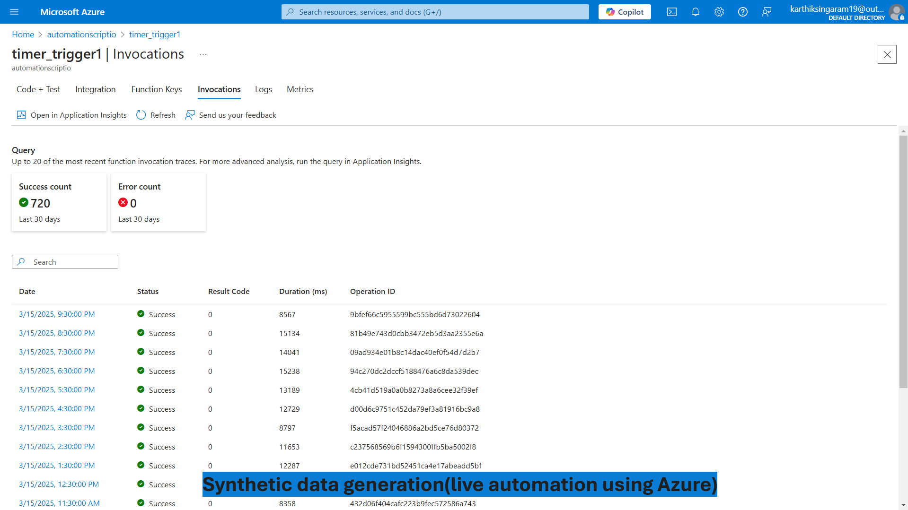
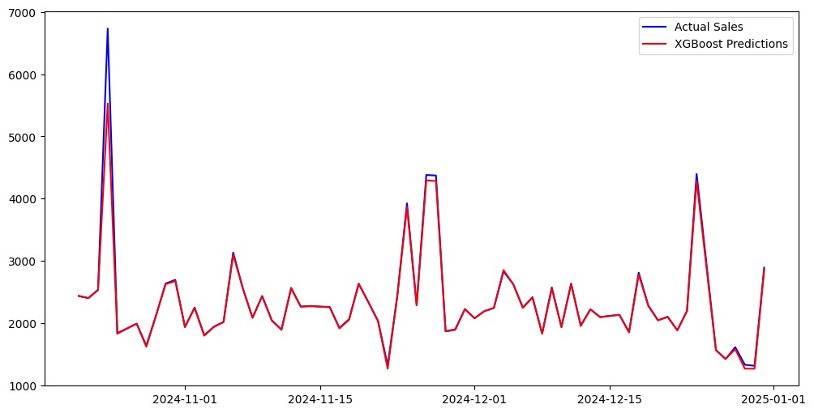
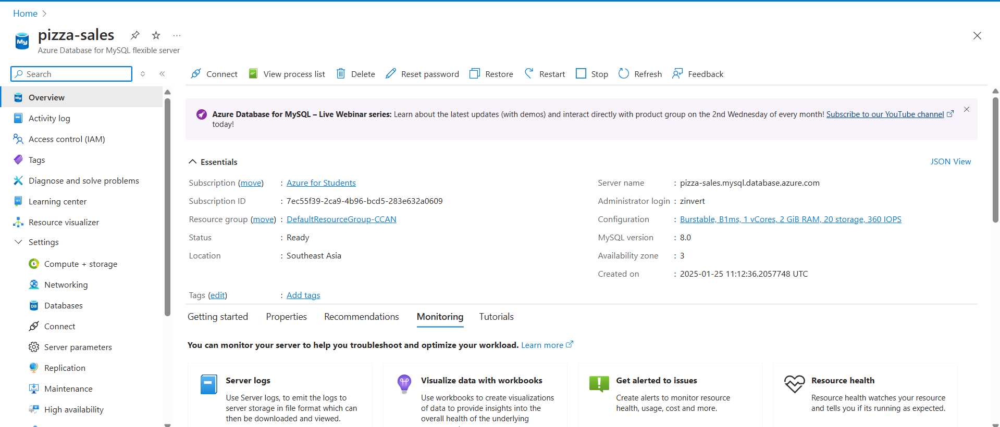
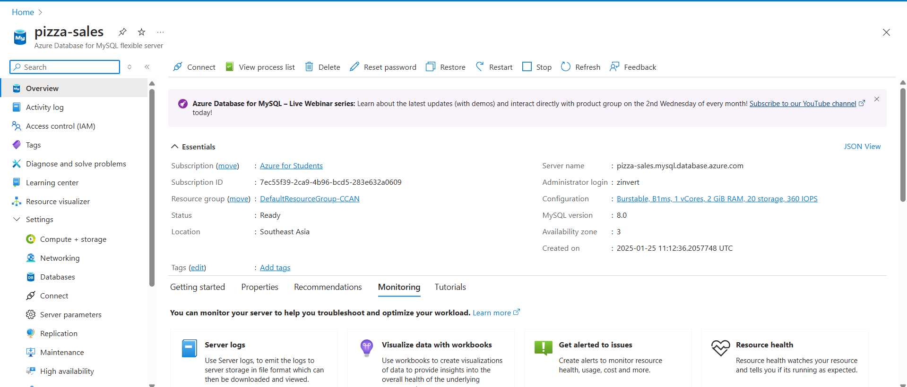

Business Process Management
A real-time BPM-based dashboard that visualizes and monitors dynamic business workflows.
It uses Azure services to generate synthetic data, simulate events, and power live analytics.
This project uses Azure Functions to automate live data generation and simulate real-time business events.
A structured relational database was created from a single static CSV, using logic-driven schema design.
MySQL was used to define relationships between tables and is hosted on Azure Database for MySQL.
The data is connected to Power BI, where dynamic reports and visuals reflect live system behavior.
The Power BI report is embedded into a web application, offering a seamless live analytics dashboard.
Insights into campus placements and hiring patterns. This project visualizes trends and helps students strategize better based on data-driven decisions.

This project predicts the winner of the 2025 Chinese Grand Prix by analyzing both the 2025 qualifying session data and the 2024 race dataset, which includes sector-wise and lap-level performance metrics. Data was sourced using
the FastF1 Python package and processed with pandas for structured analysis. Feature engineering techniques were applied to extract key performance indicators from the raw telemetry. A Gradient Boosting Regressor model was
trained to estimate race outcomes based on qualifying performance and historical trends. The final predictions provide a data-driven forecast of driver rankings, with results visualized to support interpretability.

All unseen stats of Virat Kholi.
.png)
.png) 



.png) 

.png)
.png)
.png)
.png)
.png)
.png)